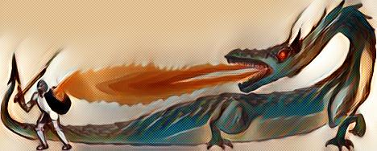
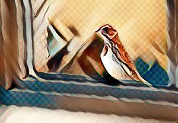
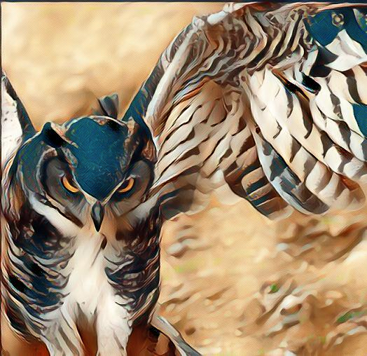
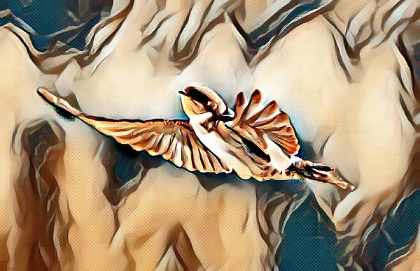
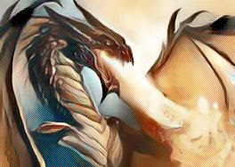
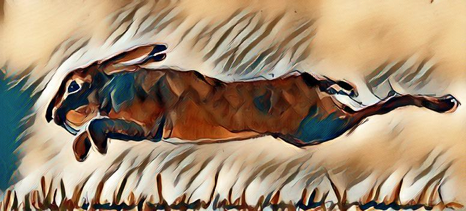

Dragons are precarious creatures. They are very touchy and extremely temperamental. One wrong move and you find yourself on the wrong end of fire. Dragons care little for who or what get in the way. Destruction has no meaning in their world. It could be that destruction is just part of their everyday life. They are also very rich, with hoards of stolen gold and jewels. They never spend their stockpile. That would be contrary to their selfish nature. Dragons are extremely selfish and self-centred. If a dragon requires anything she takes it. There is a reason the most prominent image of a dragon is typically depicted as barrelling down on a brave knight, miniscule in size by comparison. A dragon knows she has the upper hand. If a dragon worried about everything they stepped on or crushed, they would constantly be anxious, even more than usual. Perhaps it is due to the fire in their bellies, or perhaps it was that their skin was full of scales. Whatever the reason, it was never wise to upset a dragon. The cost to life and limb were just too high.
Living with a dragon was equally precarious. Dragons are typically beautiful, but one can never know what one will wake up to or walk into. If a dragon is in a good mood, your life is secure and protected. It can even be exceedingly fun. Flying is especially fun. Dragon and rider become like one and, quite literally, the sky is the limit. Neville could recall many days were he and his dragon had the most wonderful adventures. He was sure she loved him and enjoyed being with him. He certainly enjoyed being with her. But life with a dragon can easily be a battle, a quagmire of eggshells to be tread upon with the utmost care. So it was on this one particular warm summer’s day.
Neville awoke to a gentle, but constant, tap tap tapping at his window. It was Jordie Byrd. It had been awhile since he had seen the silly old thing. Jordie was a swift, but unlike most swifts, Jordie Byrd was always falling over this or stumbling over that. He was wiry and funny on any given day, but not today. Today he was focused on staying upright on the windowsill, tapping until Neville was awake. Neville made his way over to the window and opened it.
“Can I? Can I? Can I?” Jordie Byrd asked.
“Can you what?” Neville asked.
Jordie Byrd giggled. “Build a nest, right here, on your windowsill. We could be neighbours! We could be…be…house buddies!” He shouted with glee.
“Shhhhhh,” Neville hushed. “You’ll wake her!”
Jordie Byrd suddenly sobered and got very very quiet, looking around every side of him. Hopping inside, he looked around some more, turning around to make sure she didn’t sneak up behind him.
“She’ll eat me. I know she’ll eat me! Dragons love to eat magpies.”
Jordie Byrd suddenly froze at the thought of himself soldering over a dragon spit, slowly turning. Then, as suddenly as he froze, he began screaming and jumping about.
“Shhhhhh! She’ll hear you. And you’re not a magpie, Jordie. You’re a swift. Dragons don’t eat swifts. Noone eats swifts. You’re fast, remember?”
“Oh yeah,” Jordie Byrd said with a sigh, before coming to a dark realization. “Owls do.”
“Not normally.”
"That ugly old barn owl on Cardinal Lane does. She is a horrid old bat.”
“Don’t be mean. She can’t help it if she is old and wrinkly.”
“She can help being a mean old witch and a murderer! She killed her husband.” Jordie Byrd grew sombre at the recollection. “Billbunny was a good man, a smart, quiet, good man. And she killed him!” Jordie added loudly. “He wasn’t doing nothing at all and she killed him! She pecked out his innards and left him to suffer and die at the bottom of the tree. She is an evil old crone with no heart.”
It was true. The wrinkled old owl on Cardinal Lane was a horrid nasty thing that did kill her husband. Owls are typically such nice creatures. They grow very old and very wise. They are loners but are willing to help out if you need them. The old owl on Cardinal Lane, however, just grew old and mean. Billbunny was a smart, hard-working, fluffy white old thing that had amassed a great wealth over the years. They say, when the old owl was young, she was once beautiful and Billbunny fell in love. Everyone knew she never loved him back, but he was such a kind and loveable thing that no one had the heart to speak a word against her. It was common knowledge, in all the kingdoms, that she only married Billbunny so she could sit around all day in the old dead tree and do nothing except spend his wealth. One day, one terrible day, she had enough of him being around, so she pecked out his innards and tossed him out of the tree. They found him, still twitching, under her branch. When anyone looked up at her, she just turned her head around in disinterest, and paid them no mind.
“It’s one owl,” Neville finally broke the sad moment. “You’re a swift. No one is going to eat you.”
That seemed to perk Jordie Byrd right up at the thought. “So can I build a nest in your windowsill then? Can we be best buds and swap stories when the babies come?”
“Babies? What babies?”
Jordie Byrd giggled a shy kind of giggle. “Did I forget to mention? I got a girl.”
“What do you mean, you got a girl? You didn’t kidnap her, did you?”
Jordie Bird took a proud stance. “No, I did not kidnap her. She’s not a kid,” he added with a chuckle. “I met her in France.”
“France? What were you doing in France?”
“I always fly south for the winter.”
“But Jordie…France isn’t warm in the winter. You’re supposed to go south…far south.”
“But France is where the chicks are!” Jordie Byrd winked. “I have it all planned out. First I build her a house, then find a ring, then we have lots and lots of babies right here on your window where you and I can swap stories.”
“You’d better not,” Neville replied. “Dragons don’t eat swifts, but that doesn’t mean she won’t cook you.”
It was a sobering thought, and one all to real in Jordie Byrd’s mind. He wasn’t as brave as his friend. He could never live with a dragon. Not many could. It marked Neville as the bravest boy in all of the United Kingdoms of the South Downs. He was practically famous! But Jordie Byrd had to agree. One day he would wake up and find himself a cooked bird if he built his next in a dragon’s windowsill.
“Well,” Jordie Byrd said, turning back towards the window, “then I am off to find another perfect spot…but where?”
“A tree?” Neville offered.
Jordie laughed. “A tree. What a funny idea.” And with that, Jordie Byrd was off again.
#
Neville closed the window and gave their conversation some thought. Some creatures are just mean. Others, like dragons, can’t make up their minds whether they want to be mean or not. You never know what you are going to get with a dragon. Neville so wanted his dragon to wake up in a good mood. It was such a nice day. If she woke in a good mood then they could play together. Perhaps they could fly again. And so Neville settled his mind to making his dragon the most wonderful breakfast he could muster.
Warm buttered toast would do, with a spot of tea and jam. Neville always like hot toast with jam, where the butter melted softly into the nooks and crannies of the bread until they were bursting with its tender warm. It made the bread so moist and soft you would want to eat it slow, to savour its gentle texture. And jam. Putting the jam on top of the melted butter was like heaven on bread. A bit of tea to wash it down and one was set for the day. Yes, it had to be hot buttered toast for breakfast.
He would have to be quiet though. To wake his dragon before breakfast was done would be to spoil the surprise. Breakfast in bed was always a nice surprise. It meant you did not need to put your feet upon the cold floor in the morning. You could lounge in bed and eat breakfast too, so he had to be very quiet going down the stairs. He would have to go without shoes, let they clop upon the stairs as he went down. But if it were a no shoe morning, he would have to be… Neville thought for a moment. A gypsy. A pigmy. A Pirate! Neville grabbed his sword, tucked it in his belt, and tip-toed down the stairs to the kitchen.
Ever so quietly he drew the chair over to the counter and opened the cupboard door. Lifting the loaf, he set it on end and removed two slices of soft fresh bread before returning it to the cupboard. He pulled out the toaster and put the slices into the slots. Gently, as not to announce the click of the latch engaging, he pushed down the lever. Switching on the kettle was easy. A gentle steady stream of water filled the kettle with barely a noise. Now for the butter. He climbed down off the chair and made his way over to the refrigerator, carefully opening the door so that it didn’t make a sound. The butter was kept in a plastic container with a green and yellow design. Got it! He closed the door and felt good about having mastered this breakfast. A bit of jam and… A thought came over him like a cold Atlantic wave. The jam was easy. The jar was in the cupboard and spoons were in the drawer, but how, he pondered. How does the butter melt upon the toast? It’s a question he never considered before. The toast had always been presented to him with the butter already melted. The jam was already opened and the tea already poured out.
It was a question, to be sure. The tea was in a tin. Now all he had to do was figure out how much tea to put in. Tea was supposed to be fairly dark, so two or three spoonfuls should do it. Climbing back up onto the counter, Neville got a cup, a saucer, and spoon. One, two, and three spoonfuls for good measure. And now for the problem of the butter. He thought and thought, but he could see only one way. The butter had to be melted on the stove. Neville turned the knob nearest to him. Click click click and the flame burst into a bright blue. It was as easy as that. Setting the container onto the flame, Neville turned his attention towards the kettle, which was now ready. It was a little heavier than he had anticipated, but he was sure he could manage. The toast was already up. Lifting the kettle with both hands, Neville carefully poured the water into the cup, spilling a little but overall making his mark. Breakfast was going to be perfect. His dragon would be so pleased with him that they would spend the whole day together.
It was just as this wonderful thought filled his head that things began to go wrong. The container was melting onto the stove. The flames were getting bigger and there was smoke rising to the ceiling. Neville stood there for a moment, the fear growing swiftly. He didn’t know what to do. The top of the stove was alight and getting bigger. His heart was pounding in his chest, but he couldn’t seem to move. It was then that Neville heard the boom boom boom. His dragon was awake and bounding toward the kitchen, roaring so loud that it hurt his ears. It was lucky for him that dragons are so familiar with fire. His dragon put out the flames ever so quickly, but that was only the beginning.
His dragon turned to him and roared at him. Smoke came out of her nostrils. Neville tried to explain. He tried to tell her he wanted to surprise her, but his voice got lost in the roaring of her fury. It seemed to go on forever. He thought if he could just stay still he would be alright. If he could just stop shaking, but he could not. Then, in the midst of the thunder and fury, his dragon breathed fire. He crouched down and put his hands over his face to shield himself from the flames, but to no avail. The fire singed his hands. Again and again his dragon drew him to his feet and breathed fire until his hands were red and burning. Finally he was released and tossed from the house. He was not to return until dark.
#
Neville ran from the house without thought of shoes or food. He ran over the road and into Dragon’s Forest, all the across the grasslands, and past the thicket fort. He ran past the Kingdom of Hare without saying a word, raising the alarm as he passed Cpl Green. Cpl Green called after him, but Neville just kept running, shielding his poor hands, tears pouring from his face. Cpl Green knew at once that he had to report what he had seen. If their young friend was in trouble, the army needed to help. Cpl Green ran as fast as his legs could carry him to the Kingdom of Hare. Upon arrival he ran right up to Cpt Whitetail.
“Captain!” Cpl Green shouted as he neared. “Captain!”
“Corporal, contain yourself.” Cpt Whitetail insisted with the utmost decorum. “Stand at attention.”
Cpl Green instantly snapped to attention and gave a sharp solute.
“Now, corporal, what is your report?”
“It’s Neville, sir. He ran past me with all do speed at bravo section C, just past the Thicket Fort. He was shielding his hands and I think…” Cpl Green paused, not wanting to embarrass the boy.
“Confounded man, what is it?”
Cpl Green relaxed his shoulders and put down his hand. “I think he was crying, sir.”
“Crying?”
“Yes sir. I think he was hurt.”
“Are you sure?” Cpt Whitetail asked with extreme concern.
“Well he didn’t stop, not even to say hello when I called after him. He was shielding his hands as if in pain and he was crying. I could be mistaken, sir, but I don’t think so.”
“Right!” Cpt Whitetail replied sharply, causing Green to snap back to attention. “I’ll take the 2nd Battalion towards the Thicket Fort. You inform Col Hillhare and then join me with the 33rd Battalion at the Thicket Fort. Was he headed towards Cow Path?”
“Yes sir, towards the Kingdom of Grey.”
“Grey?” Cpt Whitetail questioned in alarm. “Right! Move out, corporal.”
Now when an army of hares move, they move with precision and speed. They were a good five minutes behind Neville, but still managed to catch a glimpse of him running down the path as they approached the gate at the pass. Cpl Green was right. There was something wrong. Cpt Whitetail didn’t want to wait for reinforcements. He waved his men on to follow, hoping to catch up to Neville before he entered the Grey Lands. The Kingdom of Grey was not safe. All the most seedy characters hung out there. The Kingdom of Grey was very much like Cornwall. It is famous for its pirates and unsavoury characters. It was a peninsula of lush wastelands between two kingdoms. The flying brigade remarked how lush and beautiful it looked from the air, but walking through it one knew well to stay on the path. The terrain was harsh. It was neither hedge nor forest nor coast. It was a mixture of harsh brush, weeds, pits, small trees and mounds. They boasted free trade but the only thing freed there was your wallet. It was one reason the hares never went there.
“I swear,” Cpt Whitetail said to himself, “that boy must be part hare.”
Cpt Whitetail knew he had to catch up to Neville before he reached the stairs going down to the Grey Lands. If Neville reached the second plateau it would mean the decision to take his men into hostile territory or leave Neville to his fate. It was not an easy decision. Neville was their friend and never hesitated to put himself in harms way to help them. On the other hand, it could well mean the life of a hundred to save one. The thought made him run faster, so fast his men were lagging behind, but he was gaining on the boy. The wind was starting to pick up. They were getting close to the Grey Lands.
“Neville, wait! Stop!” Cpt Whitetail shouted.
It was no use. They had come upon the Kingdom and his voice would no longer carry over the wind. Without stopping, Whitetail waved his men to hold fast and he poured all his strength into catching up to Neville. He ran low and sucked in his stomach. His ears went flat against his head and back. His focus grew intent as he cut through the wind like an arrow.